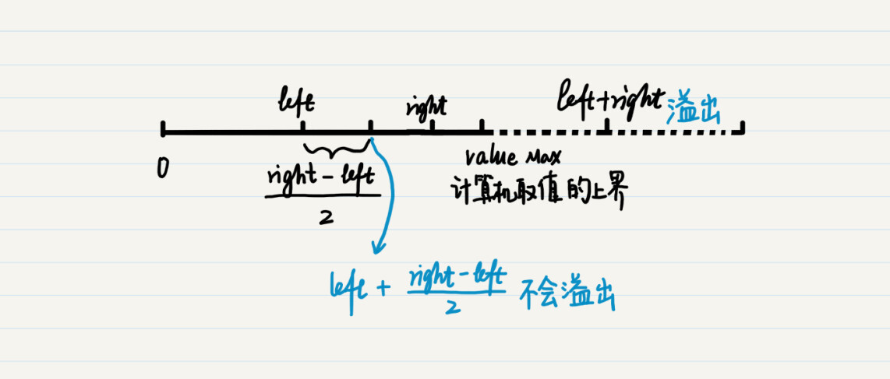

- 01 二进制：不了解计算机的源头，你学什么编程.md
- 02 余数：原来取余操作本身就是个哈希函数.md
- 03 迭代法：不用编程语言的自带函数，你会如何计算平方根？.md
- 04 数学归纳法：如何用数学归纳提升代码的运行效率？.md
- 05 递归（上）：泛化数学归纳，如何将复杂问题简单化？.md
- 06 递归（下）：分而治之，从归并排序到MapReduce.md
- 07 排列：如何让计算机学会“田忌赛马”？.md
- 08 组合：如何让计算机安排世界杯的赛程？.md
- 09 动态规划（上）：如何实现基于编辑距离的查询推荐？.md
- 10 动态规划（下）：如何求得状态转移方程并进行编程实现？.md
- 11 树的深度优先搜索（上）：如何才能高效率地查字典？.md
- 12 树的深度优先搜索（下）：如何才能高效率地查字典？.md
- 13 树的广度优先搜索（上）：人际关系的六度理论是真的吗？.md
- 14 树的广度优先搜索（下）：为什么双向广度优先搜索的效率更高？.md
- 15 从树到图：如何让计算机学会看地图？.md
- 16 时间和空间复杂度（上）：优化性能是否只是“纸上谈兵”？.md
- 17 时间和空间复杂度（下）：如何使用六个法则进行复杂度分析？.md
- 18 总结课：数据结构、编程语句和基础算法体现了哪些数学思想？.md
- 19 概率和统计：编程为什么需要概率和统计？.md
- 20 概率基础（上）：一篇文章帮你理解随机变量、概率分布和期望值.md
- 21 概率基础（下）：联合概率、条件概率和贝叶斯法则，这些概率公式究竟能做什么？.md
- 22 朴素贝叶斯：如何让计算机学会自动分类？.md
- 23 文本分类：如何区分特定类型的新闻？.md
- 24 语言模型：如何使用链式法则和马尔科夫假设简化概率模型？.md
- 25 马尔科夫模型：从PageRank到语音识别，背后是什么模型在支撑？.md
- 26 信息熵：如何通过几个问题，测出你对应的武侠人物？.md
- 27 决策树：信息增益、增益比率和基尼指数的运用.md
- 28 熵、信息增益和卡方：如何寻找关键特征？.md
- 29 归一化和标准化：各种特征如何综合才是最合理的？.md
- 30 统计意义（上）：如何通过显著性检验，判断你的A_B测试结果是不是巧合？.md
- 31 统计意义（下）：如何通过显著性检验，判断你的A_B测试结果是不是巧合？.md
- 32 概率统计篇答疑和总结：为什么会有欠拟合和过拟合？.md
- 33 线性代数：线性代数到底都讲了些什么？.md
- 34 向量空间模型：如何让计算机理解现实事物之间的关系？.md
- 35 文本检索：如何让计算机处理自然语言？.md
- 36 文本聚类：如何过滤冗余的新闻？.md
- 37 矩阵（上）：如何使用矩阵操作进行PageRank计算？.md
- 38 矩阵（下）：如何使用矩阵操作进行协同过滤推荐？.md
- 39 线性回归（上）：如何使用高斯消元求解线性方程组？.md
- 40 线性回归（中）：如何使用最小二乘法进行直线拟合？.md
- 41 线性回归（下）：如何使用最小二乘法进行效果验证？.md
- 42 PCA主成分分析（上）：如何利用协方差矩阵来降维？.md
- 43 PCA主成分分析（下）：为什么要计算协方差矩阵的特征值和特征向量？.md
- 44 奇异值分解：如何挖掘潜在的语义关系？.md
- 45 线性代数篇答疑和总结：矩阵乘法的几何意义是什么？.md
- 46 缓存系统：如何通过哈希表和队列实现高效访问？.md
- 47 搜索引擎（上）：如何通过倒排索引和向量空间模型，打造一个简单的搜索引擎？.md
- 48 搜索引擎（下）：如何通过查询的分类，让电商平台的搜索结果更相关？.md
- 49 推荐系统（上）：如何实现基于相似度的协同过滤？.md
- 50 推荐系统（下）：如何通过SVD分析用户和物品的矩阵？.md
- 51 综合应用篇答疑和总结：如何进行个性化用户画像的设计？.md
- 导读：程序员应该怎么学数学？.md
- 开篇词 作为程序员，为什么你应该学好数学？.md
- 数学专栏课外加餐（一） 我们为什么需要反码和补码？.md
- 数学专栏课外加餐（三）：程序员需要读哪些数学书？.md
- 数学专栏课外加餐（二） 位操作的三个应用实例.md
- 结束语 从数学到编程，本身就是一个很长的链条.md
数学专栏课外加餐（二） 位操作的三个应用实例
你好，我是黄申。欢迎来到第二次课外加餐时间。
位操作的应用实例
留言里很多同学对位操作比较感兴趣，我这里通过计算机中的位操作的几个应用，来帮你理解位操作。
1.验证奇偶数
在第2节里，我提到了，奇偶数其实也是余数的应用。编程中，我们也可以用位运算来判断奇偶数。
仔细观察，你会发现偶数的二进制最后一位总是0，而奇数的二进制最后一位总是1，因此对于给定的某个数字，我们可以把它的二进制和数字1的二进制进行按位“与”的操作，取得这个数字的二进制最后一位，然后再进行判断。
我这里写了一段代码，比较了使用位运算和模运算的效率，我统计了进行1亿次奇偶数判断，使用这两种方法各花了多少毫秒。如果在你的机器上两者花费的时间差不多，你可以尝试增加统计的次数。在我的机器上测试下来，同样次数的奇偶判断，使用位运算的方法耗时明显更低。
public class Lesson1_append1 {
public static void main(String[] args) {
int even_cnt = 0, odd_cnt = 0;
long start = 0, end = 0;
start = System.currentTimeMillis();
for (int i = 0; i < 100000000; i++) {
if((i & 1) == 0){
even_cnt ++;
}else{
odd_cnt ++;
}
}
end = System.currentTimeMillis();
System.out.println(end - start);
System.out.println(even_cnt + " " + odd_cnt);
even_cnt = 0;
odd_cnt = 0;
start = 0;
end = 0;
start = System.currentTimeMillis();
for (int i = 0; i < 100000000; i++) {
if((i % 2) == 0){
even_cnt ++;
}else{
odd_cnt ++;
}
}
end = System.currentTimeMillis();
System.out.println(end - start);
System.out.println(even_cnt + " " + odd_cnt);
}
}
2.交换两个数字
你应该知道，要想在计算机中交换两个变量的值，通常都需要一个中间变量，来临时存放被交换的值。不过，利用异或的特性，我们就可以避免这个中间变量。具体的代码如下：
x = (x ^ y);
y = x ^ y;
x = x ^ y;
把第一步代入第二步中，可以得到：
y = (x ^ y) ^ y = x ^ (y ^ y) = x ^ 0 = x
把第一步和第二步的结果代入第三步中，可以得到：
x = (x ^ y) ^ x = (x ^ x) ^ y = 0 ^ y = y
这里用到异或的两个特性，第一个是两个相等的数的异或为0，比如x^x= 0；第二个是任何一个数和0异或之后，还是这个数不变，比如0^y=y。
3.集合操作
集合和逻辑的概念是紧密相连的，因此集合的操作也可以通过位的逻辑操作来实现。
假设我们有两个集合{1, 3, 8}和{4, 8}。我们先把这两个集合转为两个8位的二进制数，从右往左以1到8依次来编号。
如果某个数字在集合中，相应的位置1，否则置0。那么第一个集合就可以转换为10000101，第二个集合可以转换为10001000。那么这两个二进制数的按位与就是10000000，只有第8位是1，代表了两个集合的交为{8}。而这两个二进制数的按位或就是10001101，第8位、第4位、第3位和第1位是1，代表了两个集合的并为{1, 3, 4, 8}。
说到这里，不禁让我想起Elasticsearch的BitSet。我曾经使用Elasticsearch这个开源的搜索引擎来实现电商平台的搜索。
当时为了提升查询的效率，我使用了Elasticsearch的Filter查询。我研究了一下这个Filter查询的原理，发现它并没有考虑各种文档的相关性得分，因此它可以把文档匹配关键字的情况，转换成了一个BitSet。
你可以把BitSet想成一个巨大的位数组。每一位对应了某篇文档是否和给定的关键词匹配，如果匹配，这一位就置1，否则就置0。每个关键词都可以拥有一个BitSet，用于表示哪些文档和这个关键词匹配。那么要查看同时命中多个关键词的文档有哪些，就是对多个BitSet求交集。利用上面介绍的按位与，这点是很容易实现的，而且效率相当之高。
二分查找时的两个细节
第3节我介绍了迭代法，并讲解了相关的代码实现。其中，有两个细节我在这里补充说明一下。
第一个是关于中间值的计算。我优化了两处代码，分别是Lesson3_2的第16行和Lesson3_3的第22行。
其中，Lesson3_2的第16行由原来的：
double middle = (min + max) / 2;
改为：
double middle = min + (max - min) / 2;
Lesson3_3的第22行由原来的：
int middle = (left + right) / 2;
改为：
int middle = left + (right - left) / 2;
这两处改动的初衷都是一样的，是为了避免溢出。在第一篇加餐中，介绍负数的加法时，我已经解释了什么是溢出。那这里为什么会发生溢出呢？我以第二处代码为例来讲解下。
从理论上来说，(left+right)/2=left+(right-left)/2。可是，我们之前说过，计算机系统有自身的局限性，无论是何种数据类型，都有一个上限或者下限。一旦某个数字超过了这些限定，就会发生溢出。
对于变量left和right而言，在定义的时候都指定了数据类型，因此不会超出范围。可是，left+right的和就不一定了。从下图可以看出，当left和right都已经很接近某个数据类型的最大值时，两者的和就会超过这个最大值，发生上溢出。这也是为什么最好不用通过(left+right)/2来求两者的中间值。

那么为什么left + (right -left)/2就不会溢出呢？首先，right是没有超过最大值的，那么(right -left)/2自然也就没有超过范围，即使left加上了(right -left)/2，也不会超过right的值，所以运算的整个过程都不会产生溢出。
第二个是关于误差百分比和绝对误差。在Lesson3_2中有这么一行：
double delta = Math.abs((square / n) - 1);
这里我使用了误差的百分比，也就是误差值占输入值n的比例。其实绝对误差也是可以的，不过我在这里考虑了n的大小。比如，如果n是一个很小的正整数，比如个位数，那么误差可能要精确到0.00001。但是如果n是一个很大的数呢？比如几个亿，那么精确到0.00001可能没有多大必要，也许精确到0.1也就可以了。所以，使用误差的百分比可以避免由于不同的n，导致的迭代次数有过大差异。
由于这里n是大于1的正整数，所以可以直接拿平方值square去除以n。否则，我们要单独判断n为0的情况，并使用绝对误差。
关于迭代法、数学归纳法和递归
从第3节到第6节，我连续介绍了迭代法、数学归纳法、递归。这些概念之间存在相互联系，又不完全一样，很多同学对此也有一些疑惑。所以，这里我来帮你梳理一下。
迭代法和递归都是通过不断反复的步骤，计算数值或进行操作的方法。迭代一般适合正向思维，而递归一般适合逆向思维。而递归回溯的时候，也体现了正向递推的思维。它们本身都是抽象的流程，可以有不同的编程实现。
对于某些重复性的计算，数学归纳法可以从理论上证明某个结论是否成立。如果成立，它可以大大节约迭代法中数值计算部分的时间。不过，在使用数学归纳法之前，我们需要通过一些数学知识，假设命题，并证明该命题成立。
对于那些无法使用数学归纳法来证明的迭代问题，我们可以通过编程实现。这里需要注意的是，广义上来说，递归也是迭代法的一种。不过，在计算机编程中，我们所提到的迭代是一种具体的编程实现，是指使用循环来实现的正向递推，而递归是指使用函数的嵌套调用来实现的逆向递推。当然，两种实现通常是可以相互转换的。
循环的实现很容易理解，对硬件资源的开销比较小。不过，循环更适合“单线剧情”，例如计算2^n，n!，1+2+3+…+n等等。而对于存在很多“分支剧情”的复杂案例而言，使用递归调用更加合适。
利用函数的嵌套调用，递归编程可以存储很多中间变量。我们可以很轻松地跟踪不同的分支，而所有这些对程序员基本是透明的。如果这时使用循环，我们不得不自己创建并保存很多中间变量。当然，正是由于这个特性，递归比较消耗硬件资源。
递归编程本身就体现了分治的思想，这个思想还可以延伸到集群的分布式架构中。最近几年比较主流的MapReduce框架也体现了这种思想。
综合上面说的几点，你可以大致遵循这样的原则：
如果一个问题可以被迭代法解决，而且是有关数值计算的，那你就看看是否可以假设命题，并优先考虑使用数学归纳法来证明；
如果需要借助计算机，那么优先考虑是否可以使用循环来实现。如果问题本身过于复杂，再考虑函数的嵌套调用，是否可以通过递归将问题逐级简化；
如果数据量过大，可以考虑采用分治思想的分布式系统来处理。
最后，给你留一道思考题吧。
在1到n的数字中，有且只有唯一的一个数字m重复出现了，其它的数字都只出现一次。请把这个数字找出来。提示：可以充分利用异或的两个特性。
好了，前面6讲的补充内容就到这里了。欢迎你留言给我。你也可以点击“请朋友读”，把今天的内容分享给你的好友，和他一起精进。
© 2019 - 2023 Liangliang Lee. Powered by gin and hexo-theme-book.